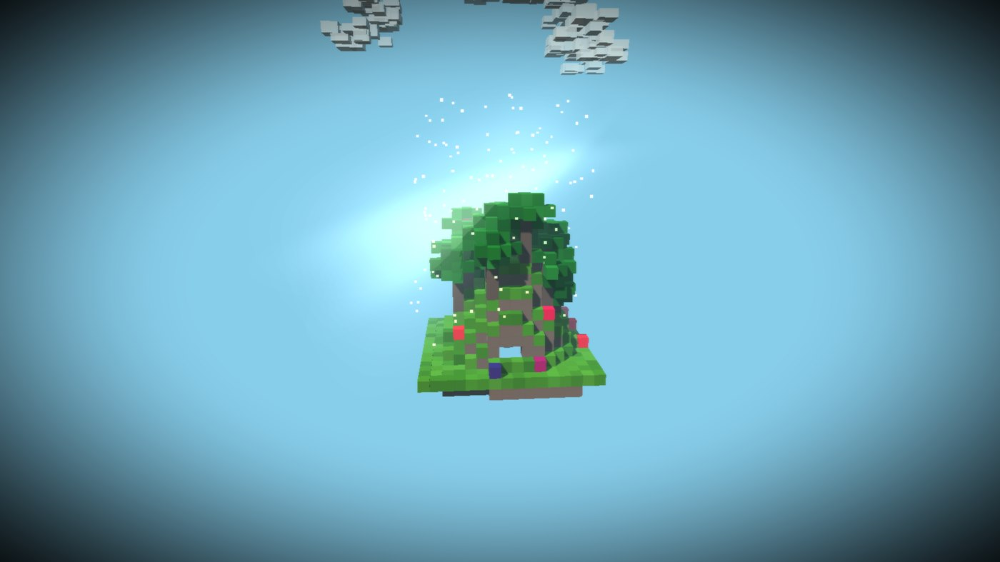
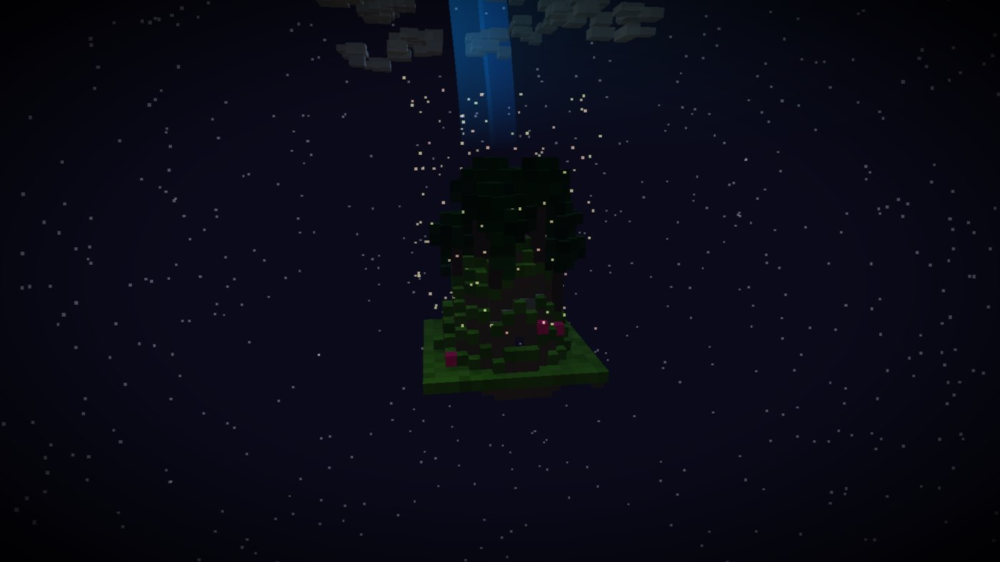
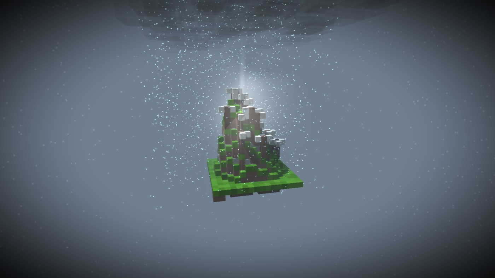
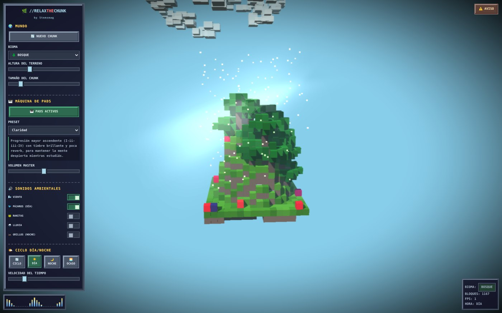

Un pedacito de mundo generado en tu navegador, con lluvia, grillos y una máquina de pads que respira sola. Ni review ni tutorial — solo una invitación a entrar y quedarte un rato.
Cada tanto en STEMS armamos algo simplemente para regalar. Esta vez es //RELAXTHECHUNK, un mundito que se genera solo, ahí en tu pantalla, y que no te pide nada a cambio — ni cuenta, ni instalación. Solo que abras la pestaña y lo dejes correr.
Apenas entrás, la pantalla se llena de un terreno hecho de bloques — como si alguien hubiera armado un paisaje en cubitos de colores. No es siempre el mismo: puede tocarte una llanura suave, un bosque denso, un desierto, una taiga nevada, una jungla, una mesa rocosa o incluso un bioma de cristal que brilla distinto a todo lo demás. La cámara gira sola alrededor del chunk, despacio, como si lo estuviera admirando por vos.
Arriba, el cielo cambia con el tiempo: amanece, atardece, cae la noche y salen las estrellas — o se pone a llover, y las nubes bajas tapan todo de gris. Hay luz que se filtra entre los bloques como rayos de sol, un brillo suave alrededor de las cosas más iluminadas, y hasta la opción de teñir la escena con grano de película o con una aurora boreal ondulando en el cielo, si querés llevarlo a un lugar más onírico.
No hay nada que ganar, ni puntaje, ni objetivo. Solo un lugar bonito que mirar.


Debajo de todo eso hay una pequeña máquina de pads, generada en el momento por el propio navegador, con presets que vas cambiando según el ánimo que busques. Y encima de esa base musical, se puede armar tu propia mezcla de sonido ambiental: viento, pájaros de día, ranitas, grillos de noche, lluvia.
Lo que más nos gustó al probarlo es que esa mezcla reacciona sola: si activás la lluvia visual, el ambiente se ajusta con ella — bajan las partículas de polvo o polen, se apaga el viento y los pájaros, y entran las ranitas, como si de verdad hubiera empezado a llover afuera. Apagás la lluvia y todo vuelve a como estaba. Es un detalle chiquito, pero es el tipo de detalle que hace que el mundo se sienta vivo en vez de solo decorado.

No hay manual que leer. El panel de control está ahí a la izquierda con todo a la vista: un botón para generar un chunk nuevo, un selector de bioma, control de altura del terreno y del tamaño del mapa. Si algo no te convence, tocás "nuevo chunk" y probás otra combinación.
Desde ahí también podés mover la velocidad del ciclo día/noche, fijar el reloj en un momento del día que te guste, ajustar cuánto se acerca o se aleja la cámara, y subir o bajar la densidad de las partículas que flotan en el aire. Si encontrás un paisaje que te enamoró, hay un botón para guardarlo y volver a cargarlo después. Y si el panel te estorba, lo escondés con un clic y te quedás solo con el mundo, a pantalla completa si querés.

Porque no tiene otra intención. //RELAXTHECHUNK nació de un experimento de Gerardo Ventura, diseñador y productor salvadoreño detrás del proyecto (podés encontrarlo como @thegeco_sv), y lo compartió en STEMS para que lo pusiéramos a disposición de quien quiera usarlo — para relajarse, para estudiar con algo bonito de fondo, o simplemente para perder una tarde moviendo perillas sin ningún propósito productivo.